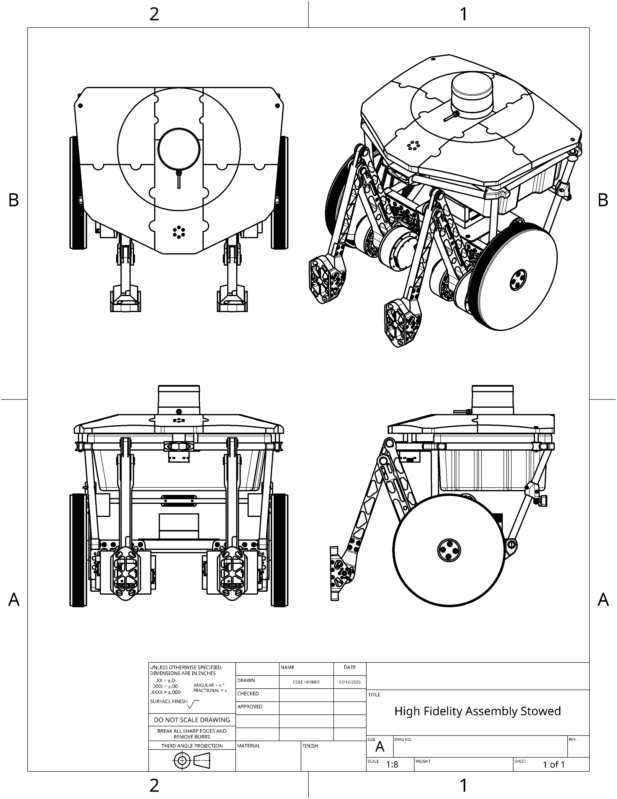
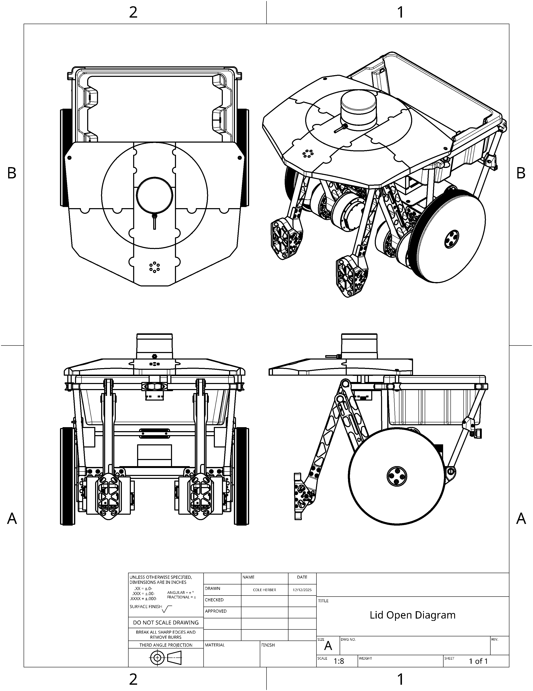
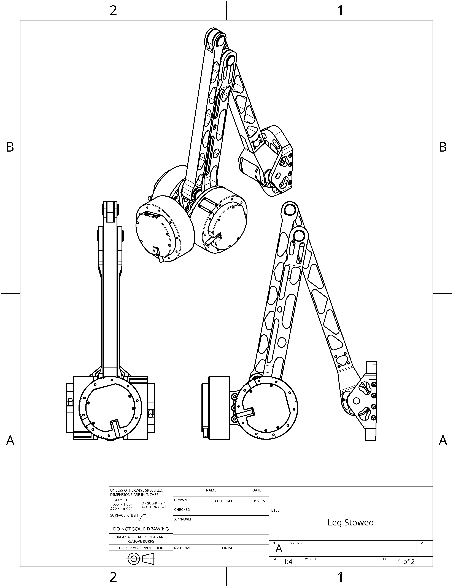
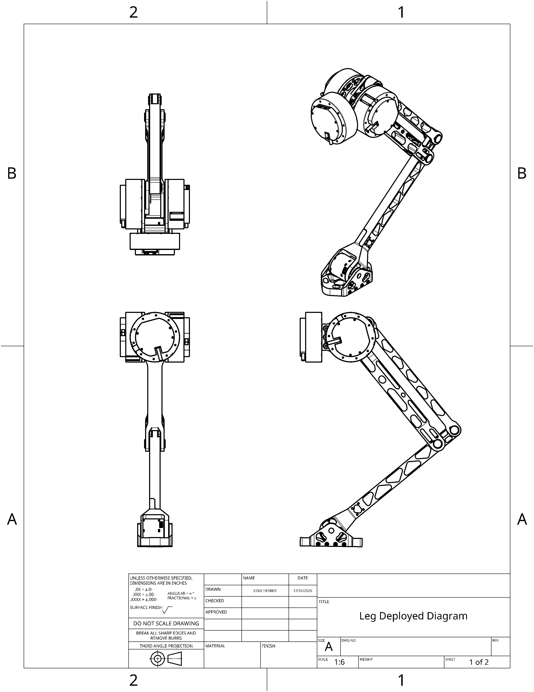
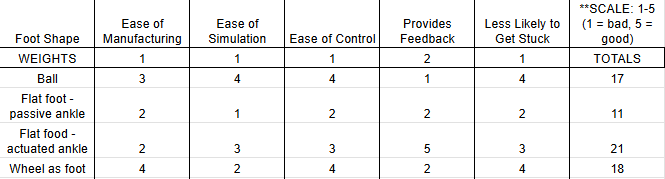
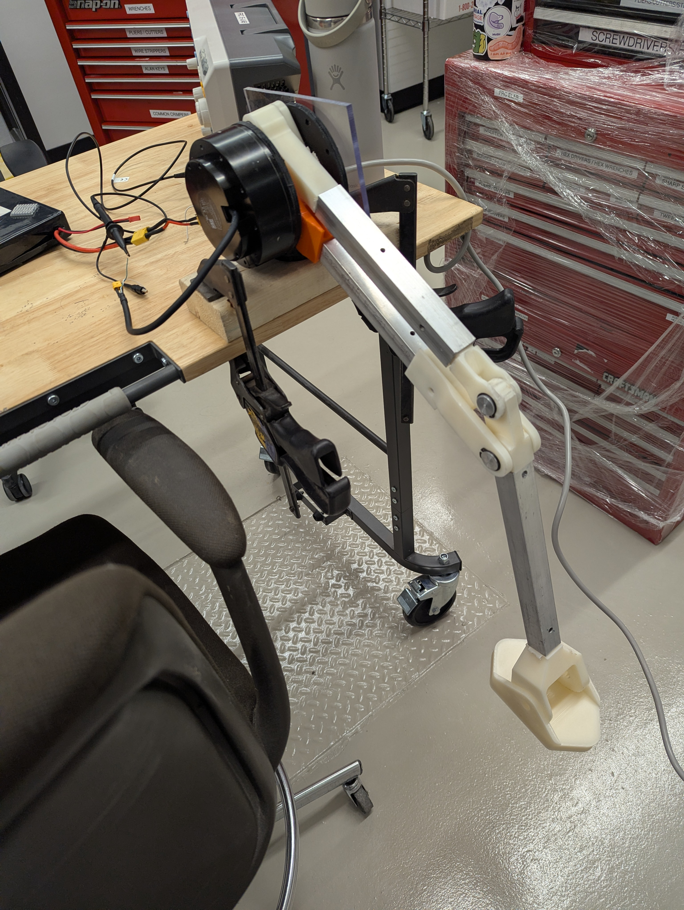
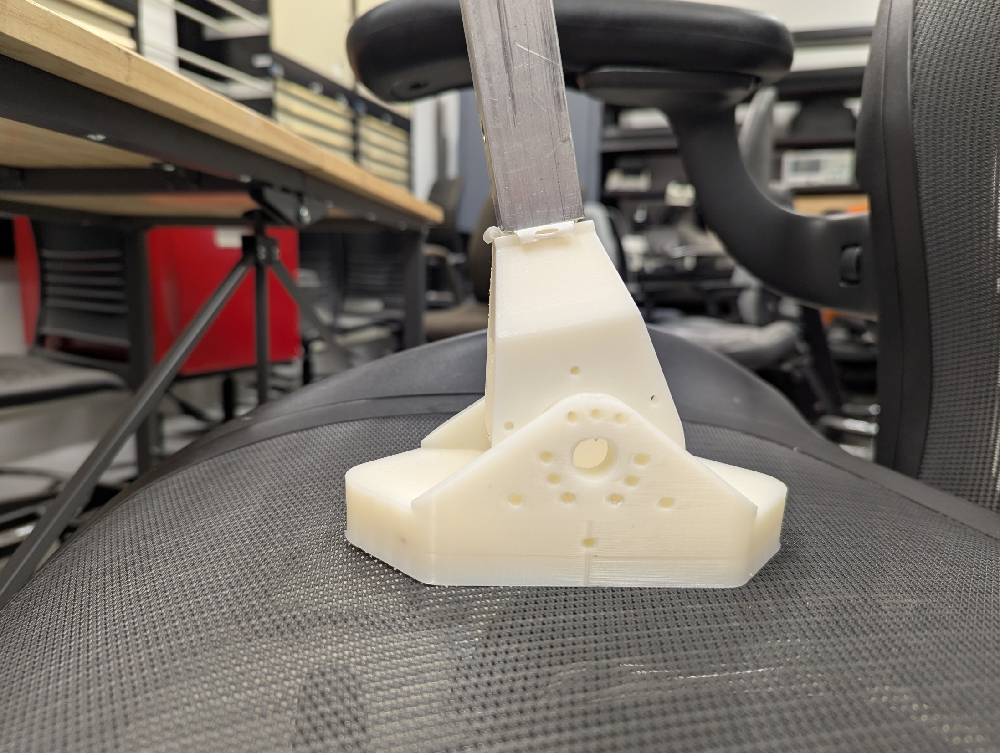
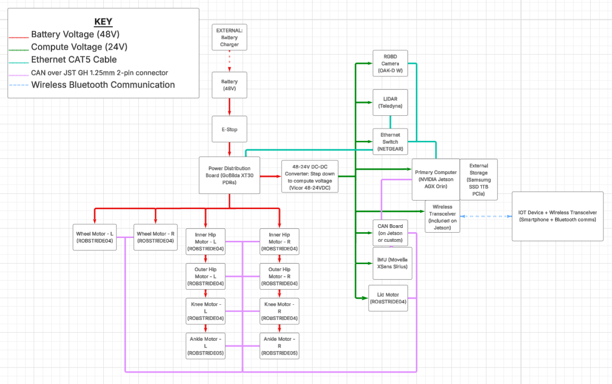
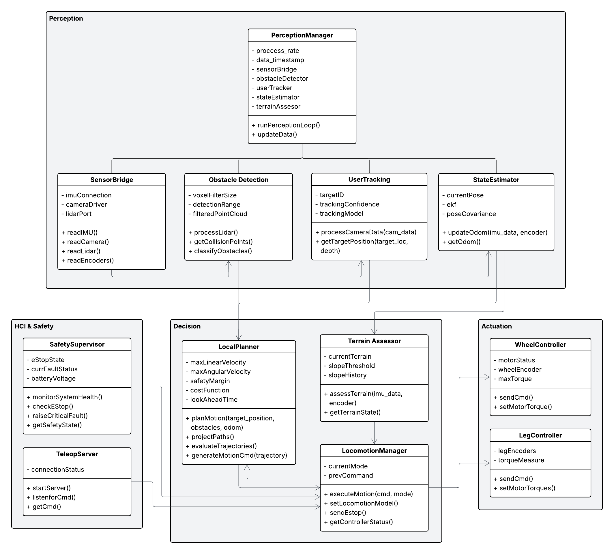
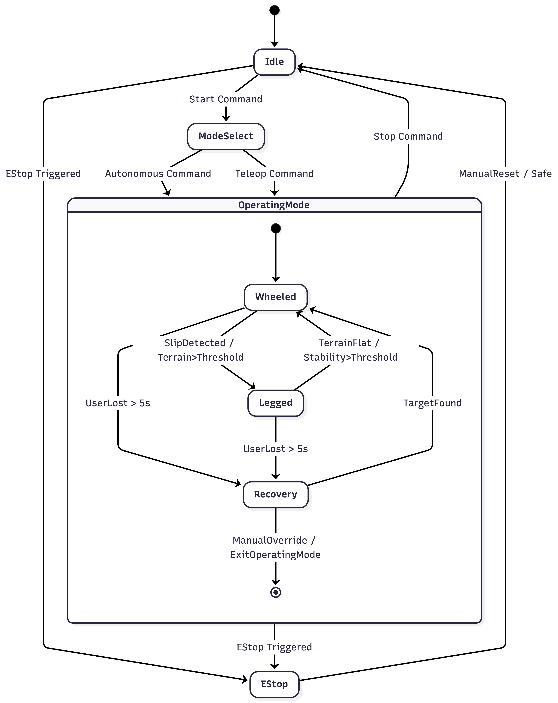

Detailed Design
System Overview
A robotic backpack with two mobility modes and autonomous following capabilities. Designed to carry a 5-gallon payload across smooth and rough terrain.
Wheels for efficient flat-ground travel; deployable powered legs with actuated hip, knee, and ankle joints for rough terrain assist.
OAK-D RGB-D camera + 3D LiDAR for user tracking and obstacle avoidance. Xsens MTi IMU for motion estimation.
Jetson AGX Orin running ROS 2 nodes connected via Ethernet. VESC motor controllers and RS04 servo joints on CAN bus.
Motorized linear sliding lid with electronic locking. 0–5 gallon payload volume secured during transit.
24 V battery powers high-current motors; DC-DC converters step down for compute electronics.
Physical + wireless E-Stop, external status LED indicators, and tele-operation fallback mode.
System Drawings
Full-robot assembly drawings showing both the cruising (wheels-down) and walking (legs-deployed) configurations.

Full Robot Assembly — Walking Configuration. Legs deployed for rough terrain traversal.

Full Robot Assembly — Lid Open Configuration. Shows the motorized linear sliding lid in the open position for cargo access.

Leg Stowed Diagram. Legs folded into the chassis for efficient wheel-based traversal on smooth terrain.

Leg Deployed Diagram. Legs extended in rough-terrain assist mode. Each leg has actuated hip, knee, and ankle joints.
Analysis confirms minimal shift of the center of mass between the walking configuration and the rolling configuration, ensuring stability across both modes without requiring significant control compensation.
Prototype Results
A physical leg prototype was built and tested before finalizing the design. Three key design questions were investigated.

Foot shape comparison: ball foot, sole (flat) foot, and wheel foot. Key evaluation criteria: terrain adaptability, stability, power consumption, and ankle feedback potential.
Three industry-standard foot shapes were evaluated:
An actuated flat foot was chosen for its robustness and lower stability-to-power ratio. Motor torque feedback at the ankle gives the system better terrain state awareness than alternative designs.

Prototype leg with a single hip actuator. Built to validate CAN communication, range of motion, and foot feedback design before full assembly.
Yes, but a more reliable board is needed. The low-cost Robstride USB-to-CAN converter showed reliability issues. Prototyping early revealed the need for a better development board before full system assembly.
Partially. The single outer hip actuator provided vertical motion, but an additional inner hip actuator was needed for full lateral control during wheeled motion. This drove the decision to add a second hip joint per leg.
Yes. Although the ankle could not be tested with full torque feedback due to motor shipping delays, range-of-motion inspection and prior torque control experience confirmed that an actuated ankle is both feasible and beneficial for terrain detection.

Foot prototype in white ABS. Flat sole with ankle motor mount. Compared against ball and wheel alternatives in bench testing.
Actuator and concept verification footage demonstrating leg response to hip motor commands, CAN communication, and foot contact behavior in the prototype phase.
Electrical Design

Component wiring diagram showing the full electrical assembly: 24 V battery bus, power distribution board, DC-DC converter, Jetson AGX Orin, Ethernet switch, VESC motor controllers, CAN bus, RS04 servo joints, RGB-D camera, LiDAR, IMU, status LEDs, and E-Stop circuit.
Software Design
The software implements a hierarchical state machine that governs mode transitions, locomotion decisions, and safety responses.

UML state diagram showing all system states (Idle, Autonomous, Rough-Terrain, Tele-Op, Recover, E-Stop) and their transitions.

Detailed state chart with guard conditions, entry/exit actions, and internal transitions for each operating mode.
All actuators unpowered. Status LEDs in idle color. Lid accessible. Awaiting user command to start tele-op or autonomous mode.
Wheels driven toward user position. Perception continuously updates target pose and obstacle map. Local planner generates reactive paths. Legs stowed.
Legs deploy. Hip, knee, and ankle joints coordinated to kick over detected obstacle. Wheels continue at reduced speed. Returns to wheeled mode after progress confirmed.
Autonomous planner disabled. All motion commands from operator input. Robot stops if wireless connection is lost. Lid access available via controller command.
Robot halts motion. Error LED pattern activated. Waits for user to re-identify target or switch to tele-op. Times out to E-Stop if no input received.
All actuator power immediately cut via hardware E-Stop circuit. Red status LEDs. Requires physical reset and system restart to resume any operation.
Manufacturing
The system was designed to be manufacturable with available academic machine shop resources, satisfying R-10.2 Manufacturability.
Custom brackets, foot prototypes, sensor mounts, and non-structural enclosure panels. White ABS and PETG for most parts; higher-strength materials for load-bearing components.
Aluminum structural chassis plates, motor mounting flanges, and precision leg segments requiring tight tolerances for joint alignment.
Round-section components including axles, spacers, and wheel hubs. Also used for precision fitting of bearing seats in leg joint housings.
ROBSTRIDE RS04 servo motors, VESC motor controllers, Jetson AGX Orin, OAK-D camera, Xsens MTi IMU, bearings, fasteners, and wiring harness components.